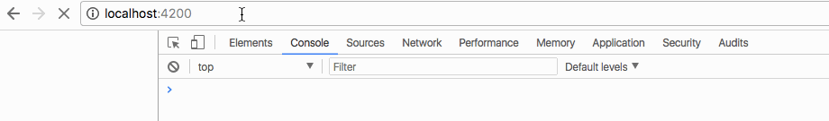

websocket 是低负载的二进制协议，目前主流浏览器都已经实现了对 websocket 的支持。
在使用 HTTP 协议进行通讯中，客户端与服务器在连接时同一时间数据传递方向只能有一个。要么在发送请求数据，要么在接受响应数据，是不能在同一时间既发送请求数据，又接收响应数据的。
而 websocket 协议允许在同一时间内进行双向数据传递。在发送数据的同时，也能接收数据。由于 websocket 是一个长连接协议，不需要在每次发送数据时建立链接，所以 websocket 的延迟比 HTTP 要低。其次，由于长连接的存在，请求时不需要每次都携带连接相关信息，所以使用 websocket 协议请求时携带的数据比 HTTP 要少。
一个简单的 websoket 服务器
下面用 ws 实现一个 websoket 服务器，以下是我们即将实现的一个场景：
客户端连接到服务器时，服务器主动推送一个消息给客户端。图中国年可以不是一个基于请求和响应的通讯协议，客户端和服务器都可以主动发送数据，而不需要明确的请求。
整个案例的架构：
服务器端声明一个 socket，客户端用 Angular 写一个服务，服务中同样声明一个 socket 与服务器进行通讯。整个服务会作为一个被观察者，通过依赖注入的方式放到组件中，组件作为一个观察者，观察 socket 产生的流，当有服务器端 socket 推送到达客户端时，组件会将消息展现在模版上。
相关工具的安装
首先安装 ws 依赖库及类型定义文件
1 | npm install ws --save |
websocket 服务器
服务器的写法非常简单，下面几行代码就实现了一个 websocet 服务器
websocket_server.ts
1 | import {Server} from 'ws'; |
服务器在端口 8081 启动后，如果有客户端连接上，那么执行函数 websocket.send('欢迎连接服务器')，即发送消息给客户端。
我们希望客户端将 websocket 推送过来的消息变成一个流，这样 Angular 可以通过订阅这个流来获取服务器推送的消息。
在《Angular2 的 HTTP 服务》 一文中，我们知道如果使用 Angular 的 HTTP 服务，可以通过订阅 http.get() 方法来处理服务器的响应数据。但 Angular 并没有在 websocket 中有类似 HTTP 服务的类来实现产生一个流，所以需要我们自己写！然后我们就可以用同样的方法（响应式编程）来处理返回的数据。
服务
创建一个服务，在服务中，我们将会处理服务器连接和发送／接收数据等相关内容。
1 | ng g service service/webSocket |
下面我们要实现两个方法：
- 第一个方法：连接服务器，接收服务器消息
- 第二个方法：向服务器发送消息
1 | import { Injectable } from '@angular/core'; |
解析：
1 | connect(url: string): Observable<any> { ... } |
创建 websocket 连接，返回一个 Observable<any> 类型的流，这样我们就可以使用类似 HTTP 的方法对流进行处理。
1 | this.ws = new WebSocket(url); |
使用参数 url 创建了一个 websocket 对象，创建连接。
1 | return new Observable( |
在返回的 Observable 中定义了一个匿名函数。匿名函数决定了返回流的行为，包括：1、什么时候发送数据 2、什么时候抛出异常（websocket 出现异常时） 3、什么时候发送流结束的信号。这三个行为均与 websocket 事件有关，分别是 onmessage、onerror和onclose。
相当于重写了 websocket 方法，使其实现返回一个流。
组件
首先生成一个 websocket 组件
1 | ng g component websocket |
websocket.component.ts
1 | import { Component, OnInit } from '@angular/core'; |
解析：
1 | constructor(public wsService: WebSocketService) { } |
使用依赖注入，将 WebSocketService 注进组件。
1 | this.wsService.connect('ws://localhost:8081') |
连接服务器。
由于我们在服务器中重写了方法，因此连接后会返回一个流。我们在组件中订阅返回的流，并对流的行为进行定义：
1 | // 收到消息时 |
websockt.component.html1
2
3<div>
<button (click)="send()">向服务器发送消息</button>
</div>
用户点击按钮时，向服务器发送数据。
实现效果
启动服务器：
1 | nodemon build/websocket_server.js |
启动客户端：
1 | npm run start |
在浏览器中查看效果，我们发现当建立 websocket 连接时，会打印出“欢迎连接服务器”字样。

如果我们点击按钮，会发现服务器接收到了客户端的消息：
服务器主动推送消息
在上面完成的例子中，服务器只能在客户端连接上以后接受客户端推送的消息，如何让服务器主动向客户端推送消息呢？
下面我们模拟一个定时推送，在服务器端添加如下代码：
websockt_server.ts
1 | ... |
打开浏览器查看效果：